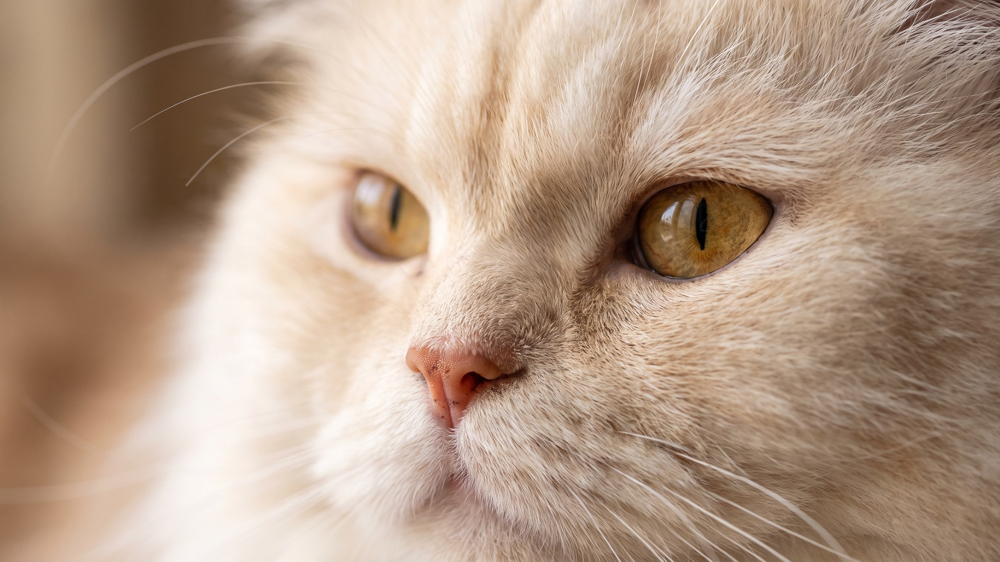

Персидская кошка входит в пятёрку самых популярных пород в России по числу регистраций WCF. Густая длинная шерсть и спокойный нрав притягивают, но уход за этой породой требует больше времени, чем за большинством короткошёрстных. Разбираем характер, что нужно для шерсти и мордочки, какие болезни встречаются чаще и кому персидская кошка подходит.
🐾 Ваш питомец — персидская кошка?
Заведите профиль в AnimaLife: приложение запомнит породу, возраст и вес и будет подсказывать по уходу именно для неё. Вопросы AI-ветеринару — круглосуточно и бесплатно.
Завести профиль → Завести в MAX →
У вас iPhone? AnimaLife есть в App Store
Персы спокойные, флегматичные и хорошо переносят одиночество. Не требуют постоянного внимания и редко лезут на руки без приглашения. Это не активная игривая порода: взрослая персидская кошка предпочитает наблюдать, а не участвовать.
С детьми и другими питомцами уживается при условии, что ребёнок не тормошит кошку и не тянет за шерсть. Конфликты с другими кошками редки, собак принимает нейтрально.
Порода плохо реагирует на резкие перемены: переезд, ремонт, частые гости. Если в доме часто шумно, персидской кошке нужно тихое место, куда она может уйти.
Шерсть густая, подшёрсток плотный, длина до 10–12 см. Без регулярного расчёсывания образуются колтуны, которые болезненно тянут кожу. Минимум ухода:
Мордочка персидской кошки приплюснутая (брахицефальная). Из-за строения черепа слёзные каналы часто переполняются, и под глазами собираются тёмные дорожки. Мордочку протирают ежедневно влажной салфеткой без отдушек или специальным лосьоном. Пропуск нескольких дней ведёт к раздражению кожи.
Персидская кошка генетически предрасположена к нескольким состояниям:
Плановый осмотр у ветеринара раз в год до 7 лет, после этого раз в 6 месяцев. Вакцинация по общему графику.
Признаки нормы: кошка активна по утрам, шерсть блестящая без обширных залысин, мордочка чистая. Обратитесь к врачу, если заметили стойкое чихание, отказ от еды дольше суток или нарастающее слезотечение.
Персидская кошка хороша для спокойного дома, где есть время на ежедневный уход. Человеку, который часто уезжает или не готов расчёсывать кошку каждый день, порода подойдёт хуже.
Котёнка покупайте у заводчика с документами WCF или TICA, с результатами теста на PKD и ветеринарной картой. Стоимость котёнка племенного класса в России начинается от 25 000–40 000 рублей.
Персы живут 13–17 лет при правильном уходе. Это долгосрочная ответственность, и расходы на корм, груминг и ветеринара стоит просчитать заранее.
Материал носит информационный характер и не заменяет очную консультацию ветеринара.
🐾 У вас персидская кошка?
AnimaLife соберёт уход под породу: к каким болезням есть склонность, что проверять по возрасту, чем кормить и когда пора к врачу. Бесплатно, прямо в мессенджере.
Собрать план ухода → Собрать в MAX →
У вас iPhone? AnimaLife есть в App Store
🐾 Понравился разбор?
Подпишитесь на канал — каждый день разбираем по одному тревожному симптому у кошек и собак: что в пределах нормы, а когда пора к врачу. Подпишитесь, чтобы не пропустить разбор, который может спасти здоровье вашего питомца.